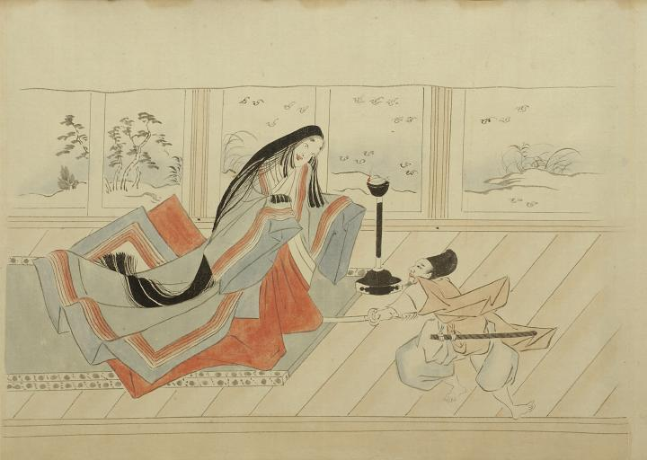

夜が明けるころ、頼光の前に美しい女が現れた。頼光が見とれていると、突然女は裾を蹴上げて鞠のような白雲を10ばかり投げつけた。頼光は目が見えなくなったので直ぐに太刀をとって斬り付けた。
出典：親書誌：U426_nichibunken_0056：土蜘蛛草紙；ツチグモソウシ／日付：2007／資源識別子：U426_nichibunken_0056_0004_0000
Copyright (c)2010- International Research Center for Japanese Studies, Kyoto, Japan. All rights reserved.